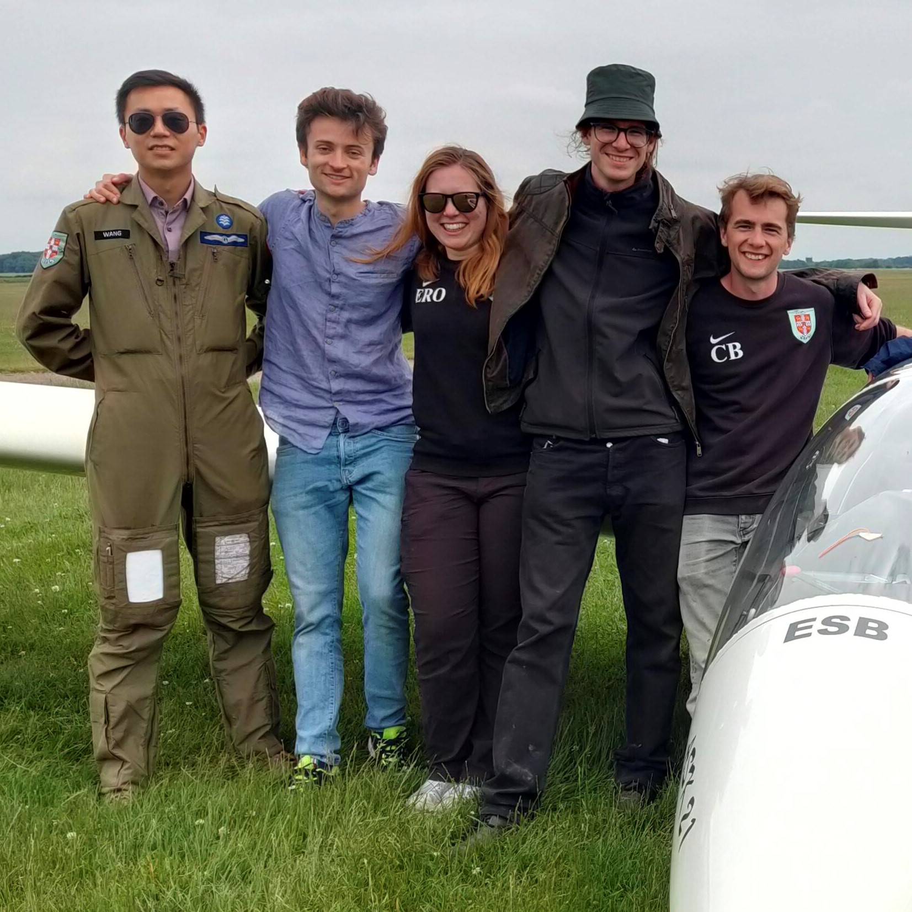

The 2021 Varsity Match for Gliding was held at Gransden Lodge Airfield from June 22nd to 24th, a Cambridge home game. It was a Cambridge win, with 333 points against Oxford’s 279.The Cambridge team consisted of Charlie, Flavio, Matt, Eszter and Peter. Oxford brought Francesca, Aili, Siobhan, Tai-Ying and Azmi with Neil Swinton, the Chief Flying Instructor.
